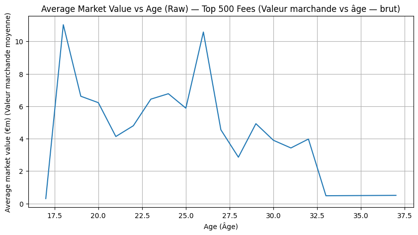
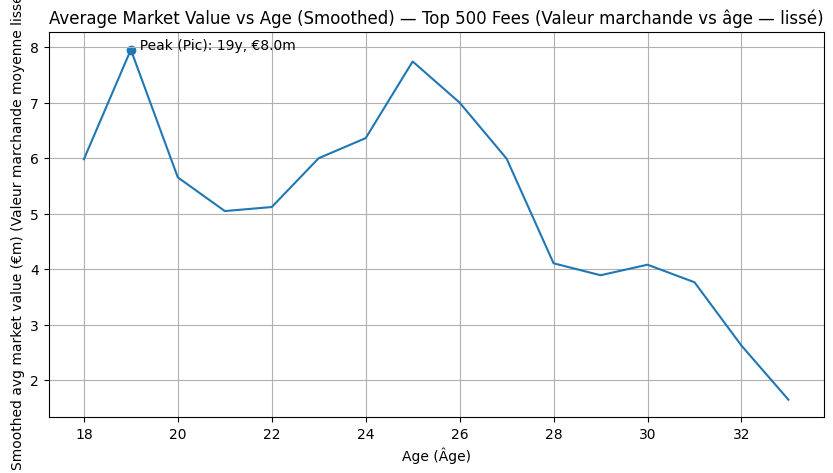
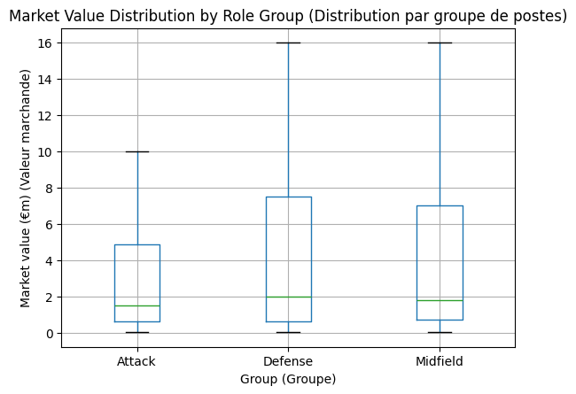
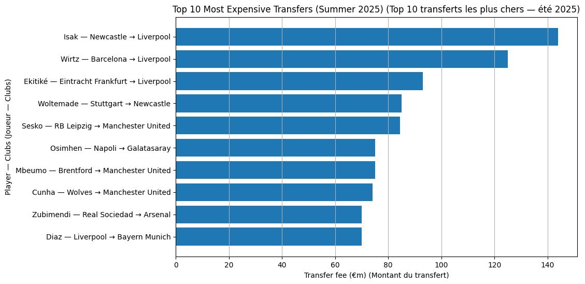

Football Market Value & Valuation Modeling
- Dataset scope: Top 500 historical transfers processed using Python (Pandas, NumPy, Matplotlib)
- Trend estimation: Raw scatter plot vs. smoothed polynomial curve fitting for peak valuation identification
- Positional breakdown: Comparative valuation distribution across tactical role clusters



